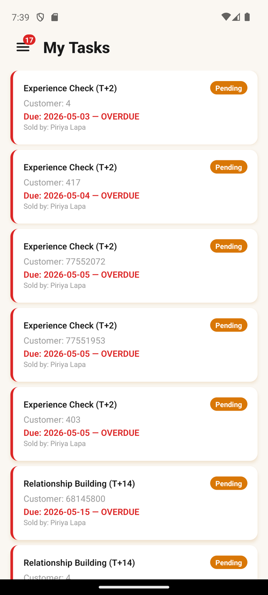
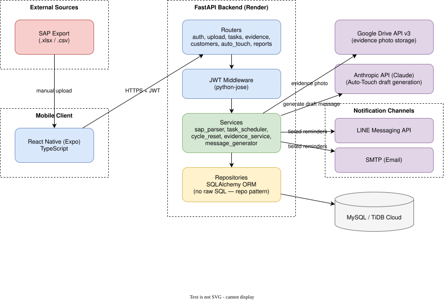
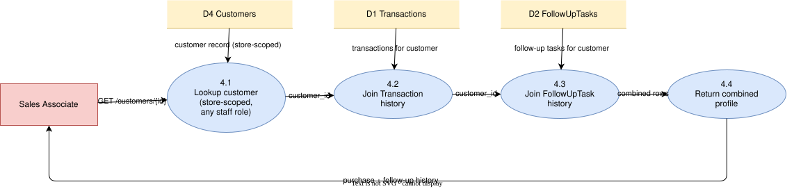
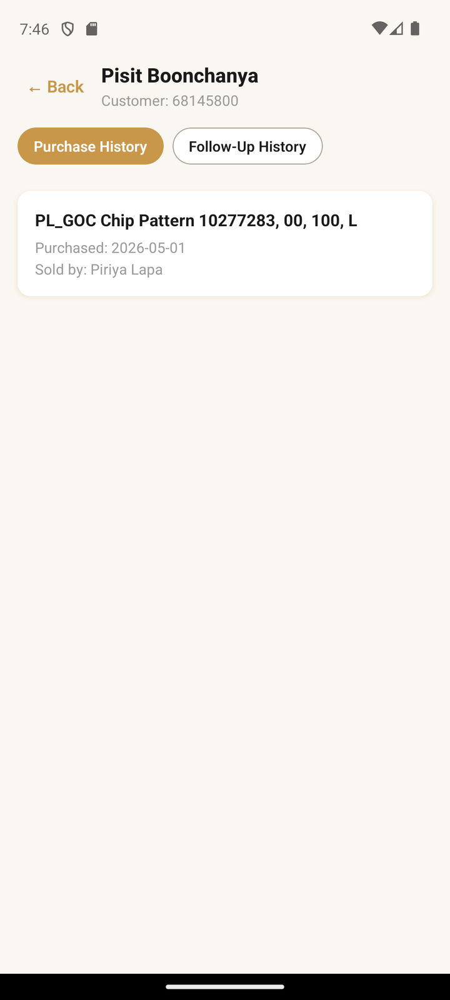
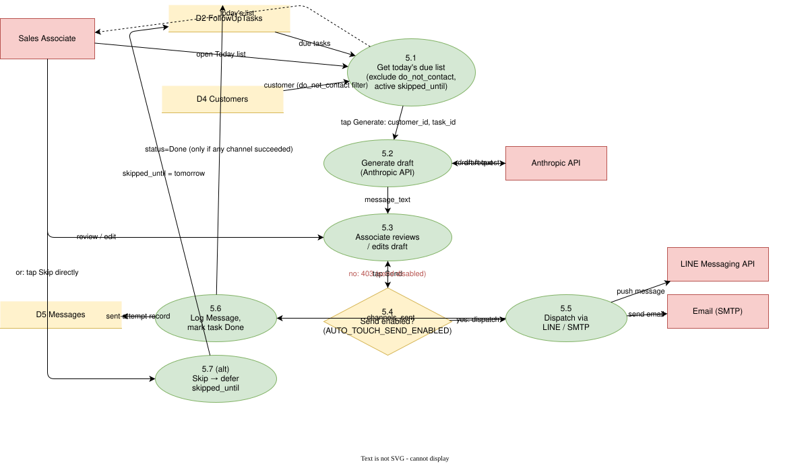
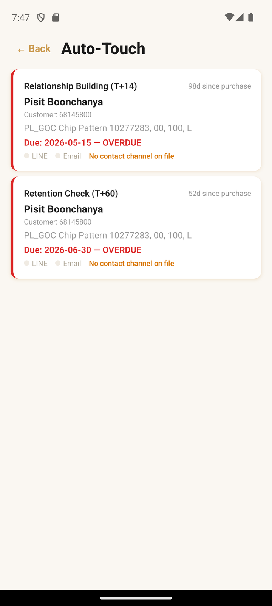

Logic

Live

Evidence-Based CRM for Luxury Retail Sales Teams
A customer buys something, says thanks, and walks out — and more often than not, no one ever follows up.
I watched that happen for nine years on a retail sales floor, alongside the daily grind of reconciling sales data by hand and watching promising leads quietly go cold. Leadership wanted the team to follow up with customers more consistently — a good goal that was hard to actually execute by hand, day after day, across dozens of customers and a constant stream of new purchases. Relationship-driven sales opportunities were falling through the cracks not from a lack of intent, but from a lack of structure.
Rather than wait for someone else to fix it, I taught myself to build the fix. Lumine is a CRM built around a tiered follow-up cadence — near-term, mid-term, and long-term touchpoints after a purchase — automating the reminders and client history that used to live only in memory and spreadsheets.
I own the full system: requirements, architecture, and QA. I directed AI coding agents across seven specialized roles (Architect, PM, QA, Developer, Security, DevOps, UX/UI) through disciplined sprints, with tests written before code at every stage. AI wrote the implementation; every requirements, architecture, and quality decision stayed fully mine.
None of this is just a claim — the rest of this document is the proof, step by step.
Two deployables, one shared contract: a Python FastAPI backend on a MySQL-compatible database, and a React Native + Expo mobile app, kept in sync through a single OpenAPI specification that governs every field name on both sides. Strict layering — routers handle HTTP concerns only, services hold business logic, repositories are the only layer that touches the database directly.

A diagram is only worth as much as its connection to what actually ships. These three pairs show the design decision on the left and the exact screen it produces on the right.

The tiered scheduling flow on the left is what actually produces the follow-up queue an associate sees on the right.


Store-wide read, PII fields excluded — the diagram's access rule matches exactly what renders on the live customer profile screen.


Draft-then-review flow — the diagram's two-step design is why the live queue always shows an editable draft, never an auto-sent message. Automated dispatch without human review was never the plan; it's a deliberate, permanent product decision, not a shortcut waiting to be enabled.
Backend and database run on free-tier cloud infrastructure, configured manually rather than through infrastructure-as-code. Early on, that manual setup had a gap: deploying new code didn't automatically apply new database migrations. A schema change shipped without its migration being applied to production — and the very next endpoint call that depended on it failed until the migration was run by hand.
The fix itself was quick. The lesson was the useful part: "deploy" and "migrate" are two separate steps that both need to be confirmed, not one step that happens to include the other. I added a manual migration-verification step to the deployment process afterward, and it hasn't recurred since. Shipping something real means owning what breaks, not just what you built.
Lumine is deployed and in active daily use. 331 automated tests pass across the backend, the mobile app covers all 14 core screens, and the system has been running in production long enough to surface — and fix — a real operational gap, not just a demo-day gap.
What I'd extend next: automated outreach dispatch is fully built but deliberately gated off pending further validation — the natural next step is expanding real-world testing to turn that gate on with confidence. A CI/CD pipeline is the other clear next investment, replacing the current manual test-and-deploy workflow with an enforced one.